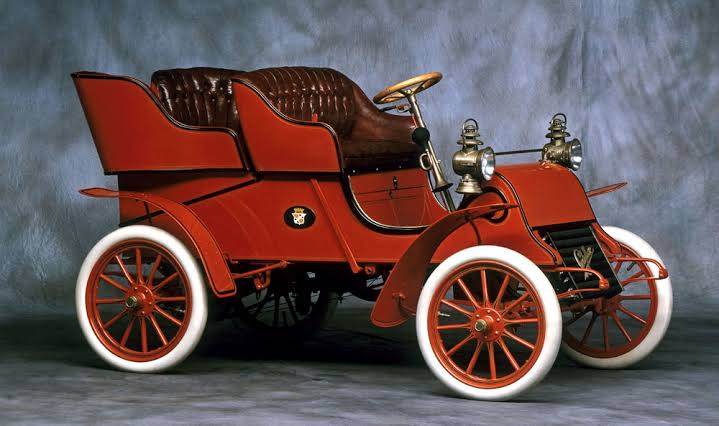
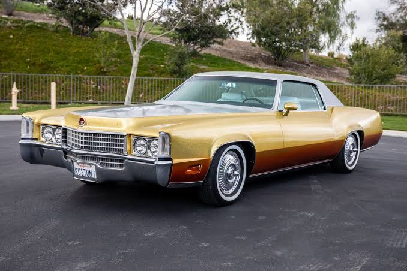
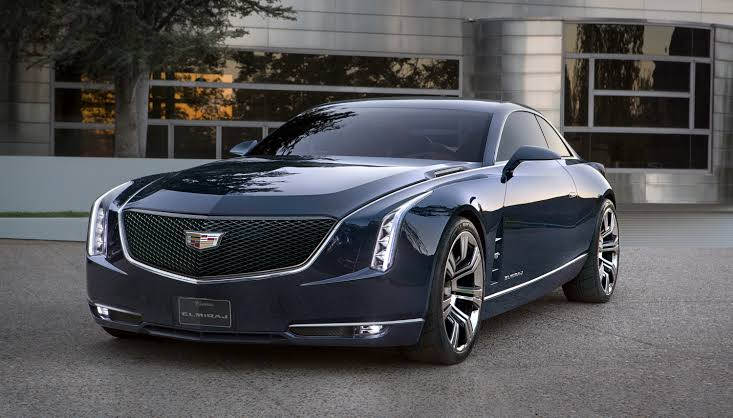

| Company name | Cadillac |
|---|---|
| Founder | William Murphy; Lemuel Bowen; Henry M. Leland |
| Founded on | 22 August 1902, Detroit, Michigan, United States |
| Headquarters | Warren, Michigan, USA |
| Parent organization | General Motors |
| Chairman | Mary T. Barra |
| CEO | Johan de Nysschen |
| No.of production plants | 4 |
| Customer service | 1-888-221-1687 |
Cadillac was founded in 1902 by Henry Leland, who named the company after Antoine de la Mothe Cadillac, who happens to be the founder of Detroit. Just 6 short years later Cadillac brought the idea of interchangeable parts to the automotive industry and laid the ground work for modern mass production of automobiles. As a result, Cadillac became the first American car to win the prestigious Dewar Trophy from the Royal Automobile Club of England. After earning such high praise Cadillac adopted the slogan "Standard of the World."
In 1910, Cadillac became the first company to offer a passenger car with a fully enclosed cabin, a major change from the vehicles of the time. Two years after that, in 1912, the company released the Model Thirty, the car with no crank, which was the first production car to feature an electronic self-starter, ignition, and lighting. By dropping the crank starter, Cadillac opened the door to women drivers, and was able to bring the prestigious Dewar trophy back to Detroit, making Cadillac the only car manufacturer to claim the award twice. Nearly three years later, Cadillac brought the world the V-type, water-cooled, eight cylinder (V8) engine, which would become the signature of the Cadillac brand.
Later in the decade, in 2008, Cadillac expanded the Escalade SUV by making it the world's first full-size luxury hybrid SUV. In the same year, the company redeveloped the CTS Sedan. This redesign has been incredibly popular and even won the coveted 2008 Car of the Year award. A short year later, the performance edition CTS-V, becomes the fasted V8 production sedan in the world, establishing a record lap time of 7:59:32 on Germany's famed Nürburgring.
